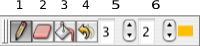

FSLView can be used to create image masks and manually edit images.
To create a mask, first load in the image that you want to base the masking on. Make sure that the loaded image is highlighted in the Image List. Then press File -> Create Mask. This will create a new blank image that will appear in the Image List. This overlay has the same dimensions as the original image; you will still see the original image because the mask image is currently empty and so is transparent.
To edit an existing image just unlock it (see below) and select the masking/editing mode in the Mode Toolbar.
To draw on an image it must be highlighted in the Image List and it must be unlocked. If it is locked then a small padlock symbol will appear next to the image name on the Image List. Click on the Padlock checkbox at the bottom of the Image List to lock or unlock the image for editing. Select Masking mode by clicking on the pencil icon on the Mode Toolbar. Moving the mouse over the image while holding down the left mouse button allows you to draw on the image.
You can change the slice viewed by pressing the Page Up or Page Down keys when the mouse cursor is over an image. You can also move the cursor incrementally using the Arrow keys.
To save the edited image / mask, make sure the image is highighted in the Image List and then press File -> Save As.
|
 |